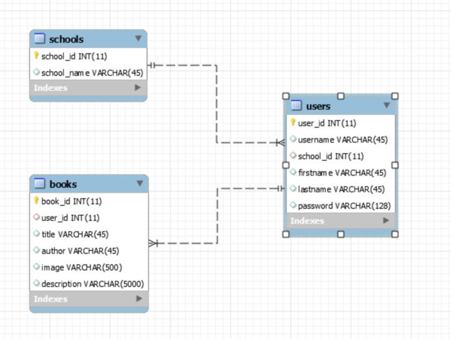

Project Summary
Qingshen Huang
1. Topic: My website allows students to search books they are interested in or they like and add books to their own book repositories. By collecting book information of users, we find out the favorite books of students from different schools.
2. How it works:
-Header: The header on each page contains a search box, and two buttons. When the user is logged in, the two buttons are USERNAME'S REPO and COLLEGE TASTE, otherwise they will be SIGN UP and LOG IN buttons.
-Search: Both guest users and registered users can search books using keywords. Clicking each book cover is will display the description of the book. If the user has logged in, clicking the book button at the bottom of each book block will add this book to your own repository, otherwise it will alert you to log in first
-Sign up: Clicking the SIGN UP button in the header will direct you to the sign-up page. Your first name, last name, username, school and password are all required. After signing up, the user will be directed to log in page
-Log in: Clicking the LOG IN button in the header will direct you to the sign-up page. Username and password are required for logging in. Users will be directed to index page after logging in
-Personal repository (log in required): Users can view and delete books on the repository page.
-College taste (log in required): Books liked by students from different schools will show here. The dropdown list on the left allow the users to choose which school's favorite books to display.
-Edit information(log in required): Clicking EDIT/VIEW PROFILE on repository page will direct users to a new page, on which users can view and edit their personal information
-Log out (log in required): Clicking LOG OUT on repository page will destroy the session for current user and direct the users to index page
3. Data source and storage:
Book data come from Google Books API. When a user adds a book to their repositories, the image links, titles, authors and descriptions of books will be stored into database with the userID which associated with the user table
User data come from the users when they sign up on the site. Each user's first name, last name, username, school and password will be stored in the database
School data are prefilled and now have four universities in California
4. Extras:
1). Session is used on this project to maintain the status of users. Guest users can only search and browse books, but registered uses can have their own repositories of books and view favorite books of different school
2). Google Books API is used to get book information when users search by key words. Link: https://developers.google.com/books/
3). Ajax is used to perform adding and deleting functionalities to enhance user experience
4). Materialize is used for front end decorations and layout Link: https://materializecss.com/
5). The CSS and JavaScript libraries provided by Materialize are used to create animations such as sliding effect on book covers and wave effects on buttons
5. Database Diagram:
